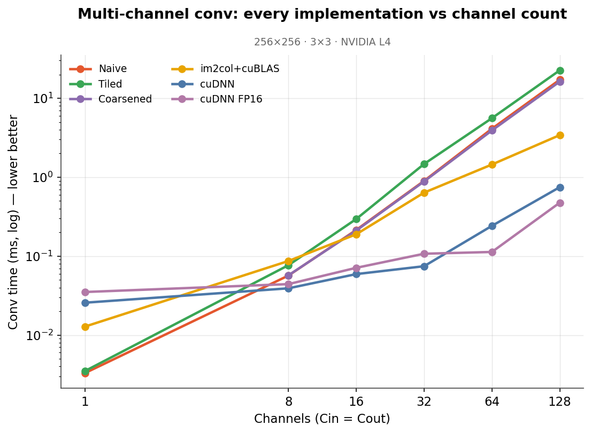
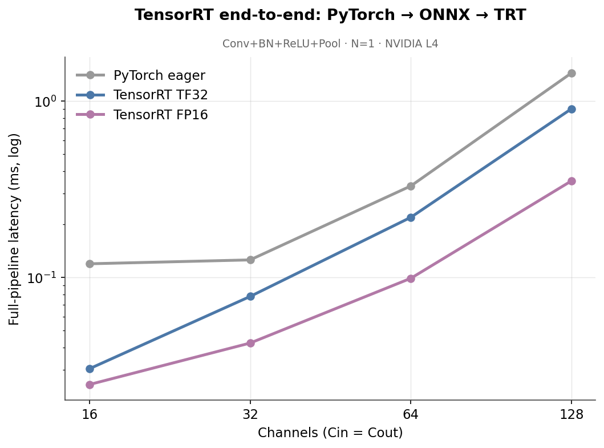

accelerating-cnn
Every way a CNN's forward pass gets run on an NVIDIA GPU, from a naive CUDA kernel to a production TensorRT engine. Built from scratch, checked against a CPU reference, and profiled to explain which approach wins in which regime, and why.
- No single winner. At one channel my tiled kernel beats cuDNN; by 64 channels cuDNN is ~25× faster. It depends on the shape of the problem.
- Reformulate, don't micro-optimize. Turning the convolution into a matrix multiply (im2col + cuBLAS) beat every hand-tuned direct kernel, ~10× over naive.
- FP16 isn't free speed. It only helps when the Tensor Cores engage: 5× in TensorRT, sometimes slower than FP32 in raw cuDNN.


CUDAcuDNNcuBLASTensorRTNsightC++